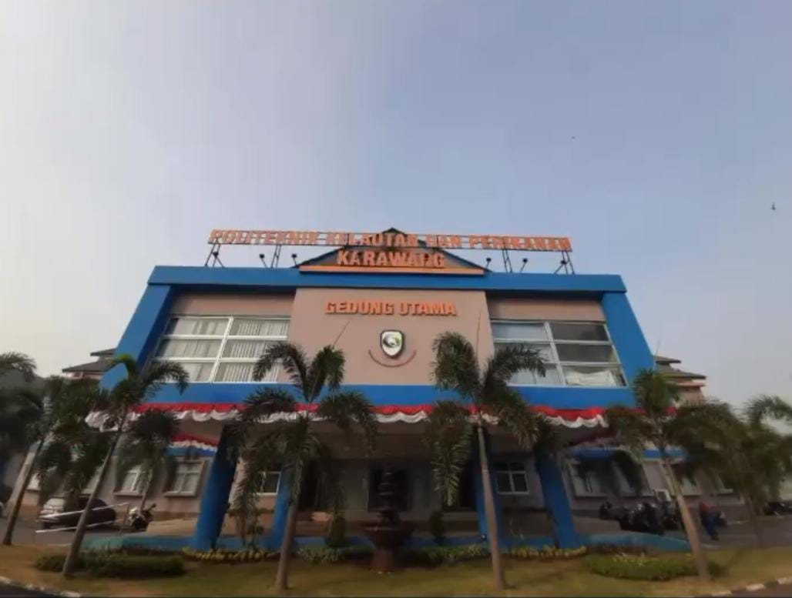
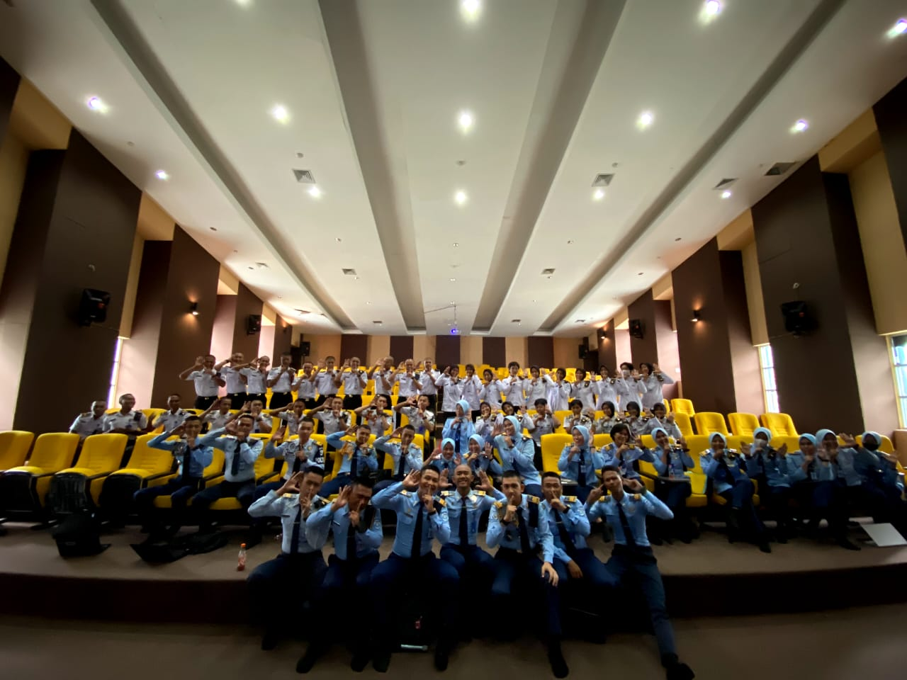
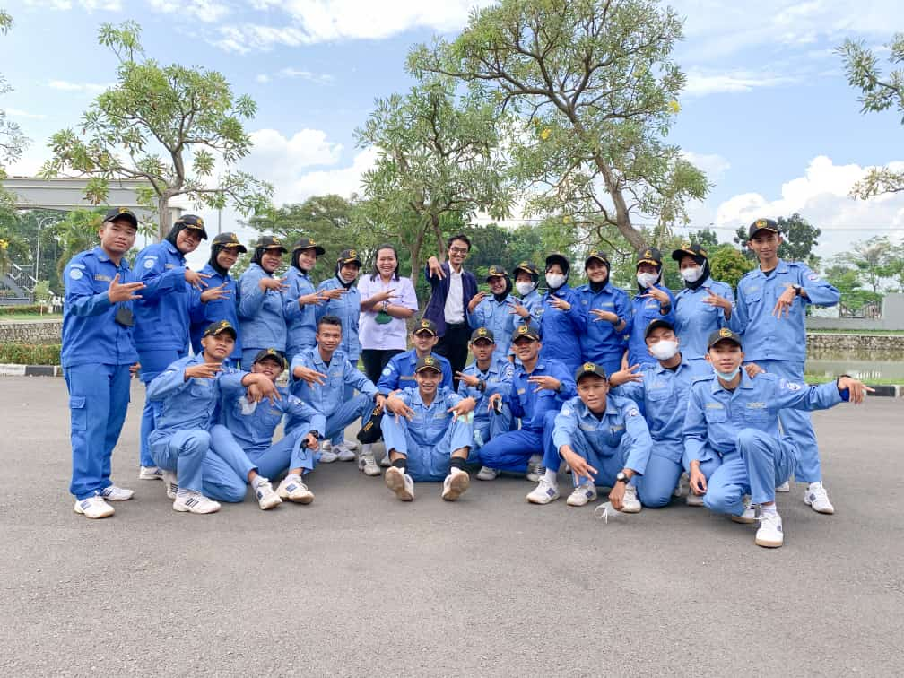
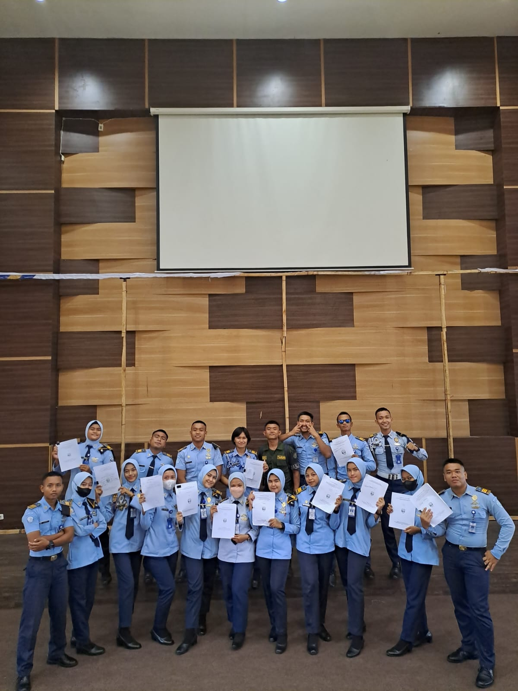

Profil Prodi

Politeknik Kelautan dan Perikanan Karawang merupakan kampus vokasi dibawah naungan Kementrian Kelautan Perikanan. Vokasi sendiri merupakan pendidikan tinggi yang berfokus pada praktik kerja yang dapat menunjang keahlian dibidang tertentu. Teknik Kelautan merupakan salah satu dari empat program studi yang ada di Politeknik Kelautan dan Perikanan Karawang.
Teknik Kelautan mempunyai kompetensi lulusan yang berfokus pada kemampuan profesional di bidang marine and coastal convertation, marine energy alternavtive, marine ecoturism, dan underwater working.
Peminatan Studi
Teknik Kelautan atau sering disebut dengan singkatan TKL
mempunyai beberapa peminatan di dalamnya. peminatan ini akan ditempuh oleh taruna pada semester empat sampai seterusnya

Peminatan pada prodi ini ada dua, yaitu:
Konservasi

Di peminatan ini Taruna/i belajar ilmu tentang Pengelolaan Sumber Daya Pesisir dan Laut, guna menjaga biodeversitas yang sangat berhubungan dengan ekosistem-ekosistem yang menjadi habitat biota laut.
disini Taruna/i berfokus pada tiga ekosistem laut yang saling berkesinambungan. yaitu: Mangrove, Lamun, dan Terumbu Karang. Upaya yang dilakukan terhadap ekosistem ini dengan cara transplantasi, monitoring secara berkala, dll.
Ekstraksi

Pada peminatan ini Taruna/i belajar bagaimana membangun alat untuk memanfaatkan sumberdaya laut sehingga menghasilkan energy atau produk yang bermanfaat.
Alat yang dibangun antara lain seperti, konversi energi gelombang laut yang menghasilkan listrik, membuat alat untuk kualitas air, dan pengolahan air laut menjadi garam.
Geografis Kampus
Jl. Lingkar Tanjungpura, Karangpawitan, Kec. Karawang Bar., Karawang, Jawa Barat 41315 .